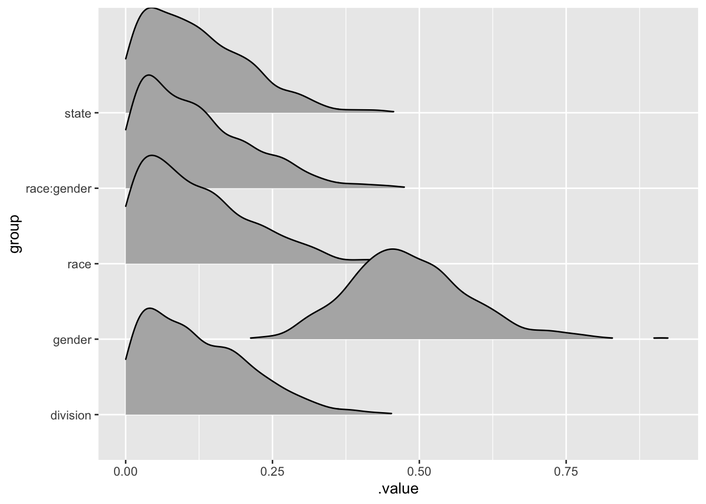

I recently got a question about using MRP and I thought it would be worthwhile to share some of the additional explanation of using this approach with a simulated data set. Simulating your data and testing your method is a really good way to understand if your model is sensitive enough to detect differences. This kind of fake data simulation will allow you to see if your model fails, before using it production or in the field where the cost of failure is high.
Population Data
I’m going to generate some synthetic data for this example. This will represent our population and provide a benchmark for “truth.” The data are completely made up and don’t represent anything in particular.
These data represent a population of 1 million persons, of binary gender, four different races, living in the US. Again, the proportions are made up.
── Conflicts ────────────────────────────────────────── tidyverse_conflicts() ──
x dplyr::filter() masks stats::filter()
x dplyr::lag() masks stats::lag()
Let’s imagine that each person has a probability , \(\theta\) of supporting a given opinion. Again, let’s suppose that the probability of support is partially determined by some combination of gender, race, location, and of course some random noise.
Now I’m going to draw my sample for my analysis. This would represent a completely random sample of my population.
Multi-Level Regression
Now we can step into the first component of MRP, the multi-level or hierarchical regression modeling. Here based on literature and inference that race, gender, state, and census division may be important, or help me make inference on the probability of supporting the given option. Additionally, I will use partial pooling to help make inferences for some of the small cell sizes that exist in my survey. I can build that given equation using brms.
library(brms)
Loading required package: Rcpp
Loading 'brms' package (version 2.16.1). Useful instructions
can be found by typing help('brms'). A more detailed introduction
to the package is available through vignette('brms_overview').
Attaching package: 'brms'
The following object is masked from 'package:stats':
ar
Now I can set my priors for the different coefficients in my model.
my_priors <-c(set_prior("normal(0,0.2)", class ="sd", group ="race:gender"),set_prior("normal(0,0.2)", class ="sd", group ="race"),set_prior("normal(0,0.2)", class ="sd", group ="gender"),set_prior("normal(0,0.2)", class ="sd", group ="state"),set_prior("normal(0,0.2)", class ="sd", group ="division") )
Now we can run the model in brms.
fit <-brm(my_equation, survey, prior = my_priors, chains =2, iter =1000, cores =2, family =bernoulli(),silent =TRUE)
Compiling Stan program...
Trying to compile a simple C file
Running /usr/local/Cellar/r/4.1.2/lib/R/bin/R CMD SHLIB foo.c
/usr/local/opt/llvm/bin/clang -I"/usr/local/Cellar/r/4.1.2/lib/R/include" -DNDEBUG -I"/usr/local/lib/R/4.1/site-library/Rcpp/include/" -I"/usr/local/lib/R/4.1/site-library/RcppEigen/include/" -I"/usr/local/lib/R/4.1/site-library/RcppEigen/include/unsupported" -I"/usr/local/lib/R/4.1/site-library/BH/include" -I"/usr/local/lib/R/4.1/site-library/StanHeaders/include/src/" -I"/usr/local/lib/R/4.1/site-library/StanHeaders/include/" -I"/usr/local/lib/R/4.1/site-library/RcppParallel/include/" -I"/usr/local/lib/R/4.1/site-library/rstan/include" -DEIGEN_NO_DEBUG -DBOOST_DISABLE_ASSERTS -DBOOST_PENDING_INTEGER_LOG2_HPP -DSTAN_THREADS -DUSE_STANC3 -DSTRICT_R_HEADERS -DBOOST_PHOENIX_NO_VARIADIC_EXPRESSION -DBOOST_NO_AUTO_PTR -include '/usr/local/lib/R/4.1/site-library/StanHeaders/include/stan/math/prim/fun/Eigen.hpp' -D_REENTRANT -DRCPP_PARALLEL_USE_TBB=1 -I/usr/local/opt/gettext/include -I/usr/local/opt/readline/include -I/usr/local/opt/xz/include -I/usr/local/include -fPIC -g -O3 -Wall -pedantic -std=gnu99 -mtune=native -pipe -c foo.c -o foo.o
In file included from <built-in>:1:
In file included from /usr/local/lib/R/4.1/site-library/StanHeaders/include/stan/math/prim/fun/Eigen.hpp:22:
In file included from /usr/local/lib/R/4.1/site-library/RcppEigen/include/Eigen/Dense:1:
In file included from /usr/local/lib/R/4.1/site-library/RcppEigen/include/Eigen/Core:88:
/usr/local/lib/R/4.1/site-library/RcppEigen/include/Eigen/src/Core/util/Macros.h:628:1: error: unknown type name 'namespace'
namespace Eigen {
^
/usr/local/lib/R/4.1/site-library/RcppEigen/include/Eigen/src/Core/util/Macros.h:628:16: error: expected ';' after top level declarator
namespace Eigen {
^
;
In file included from <built-in>:1:
In file included from /usr/local/lib/R/4.1/site-library/StanHeaders/include/stan/math/prim/fun/Eigen.hpp:22:
In file included from /usr/local/lib/R/4.1/site-library/RcppEigen/include/Eigen/Dense:1:
/usr/local/lib/R/4.1/site-library/RcppEigen/include/Eigen/Core:96:10: fatal error: 'complex' file not found
#include <complex>
^~~~~~~~~
3 errors generated.
make: *** [foo.o] Error 1
Start sampling
Now we can visualise the outputs.
library(tidybayes)
Attaching package: 'tidybayes'
The following objects are masked from 'package:brms':
dstudent_t, pstudent_t, qstudent_t, rstudent_t
fit %>%gather_draws(`sd_.*`, regex=TRUE) %>%ungroup() %>%mutate(group = stringr::str_replace_all(.variable, c("sd_"="","__Intercept"=""))) %>%ggplot(aes(y=group, x = .value)) + ggridges::geom_density_ridges(aes(height=..density..),rel_min_height =0.01, stat ="density",scale=1.5)
Warning: as.mcmc.brmsfit is deprecated and will eventually be removed.

Additionally, we should do some additional posterior checks which includes checking our Rhat values for convervenges and our effective sample size. Additionally, some posterior predictive checks would also be helpful to ensure that our model is performing well. I won’t do that here, but it is a good practice to do those things.
We can also check some of the intercepts to see if the model detected some of the changes that we introduced.
library(bayesplot)
This is bayesplot version 1.8.1
- Online documentation and vignettes at mc-stan.org/bayesplot
- bayesplot theme set to bayesplot::theme_default()
* Does _not_ affect other ggplot2 plots
* See ?bayesplot_theme_set for details on theme setting
It looks like the model picked up the gender differences as well as the specific difference for Asians. However, it looks like the model did not do a great job discriminating on differences for South Carolina. We could explore this further, but it is important to check that our model is performing as expected.
Create the Census Data
Now we step into the post-stratification step. Here we have the population values from our fake data. In reality you would probably use estimates from a census. Here we are interested in predicting state level opinion, so we we want to stratify at that level. If we wanted to make inferences about a different level we would stratify to that given level. I’m going to do both state level overall and race within state for this example.
( post_strat_values <- population_data %>%group_by(division, state, race, gender) %>%summarise(n =n()) %>%group_by(state) %>%# The level at which you want to measure supportmutate(perc = n /sum(n)) %>%ungroup() %>%group_by(state, race) %>%mutate(perc_2 = n/sum(n)) %>%ungroup())
`summarise()` has grouped output by 'division', 'state', 'race'. You can
override using the `.groups` argument.
# A tibble: 400 × 7
division state race gender n perc perc_2
<fct> <chr> <chr> <chr> <int> <dbl> <dbl>
1 New England CT Asian Female 958 0.0475 0.478
2 New England CT Asian Male 1047 0.0519 0.522
3 New England CT Black Female 2061 0.102 0.509
4 New England CT Black Male 1989 0.0986 0.491
5 New England CT Hispanic Female 3053 0.151 0.499
6 New England CT Hispanic Male 3060 0.152 0.501
7 New England CT White Female 3997 0.198 0.499
8 New England CT White Male 4009 0.199 0.501
9 New England MA Asian Female 999 0.0493 0.493
10 New England MA Asian Male 1026 0.0506 0.507
# … with 390 more rows
Now we can add some draws from the posterior distribution to our dataset and then make inferences on them.
pred<-fit %>%add_predicted_draws(newdata=post_strat_values, allow_new_levels=TRUE, n =100) %>%mutate(individual_support = .prediction) %>%rename(support = .prediction) %>%mean_qi() %>%mutate(state_support = support * perc) %>%# Post-stratified by statemutate(state_race = support *perc_2) # Post-stratified by gender within state
Warning:
In add_predicted_draws(): The `n` argument is a deprecated alias for `ndraws`.
Use the `ndraws` argument instead.
See help("tidybayes-deprecated").
Warning: Argument 'nsamples' is deprecated. Please use argument 'ndraws'
instead.
Now we can do whatever we want to do with regard to inferences:
by_state_estimated <- pred %>%group_by(state) %>%summarise(estimated_support =sum(state_support)) %>%left_join(population_data %>%group_by(state) %>%summarise(true_support =mean(true_opinion)))
Now we can look to see how our prediction did for the population, though we missed the Southern states. Probably because our decision to partial pool on division was a bad one given the effects we introduced at the state level did not necessarily coincide with the census division.
`summarise()` has grouped output by 'state'. You can override using the
`.groups` argument.
`summarise()` has grouped output by 'state'. You can override using the
`.groups` argument.
Joining, by = c("state", "race")
# A tibble: 200 × 4
# Groups: state [50]
state race estimated_support true_support
<chr> <chr> <dbl> <dbl>
1 AK Asian 0.471 0.396
2 AK Black 0.510 0.494
3 AK Hispanic 0.490 0.496
4 AK White 0.465 0.508
5 AL Asian 0.518 0.388
6 AL Black 0.451 0.500
7 AL Hispanic 0.510 0.492
8 AL White 0.474 0.498
9 AR Asian 0.462 0.395
10 AR Black 0.463 0.496
# … with 190 more rows
![]()